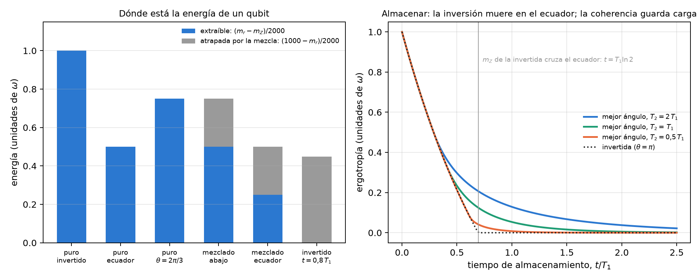
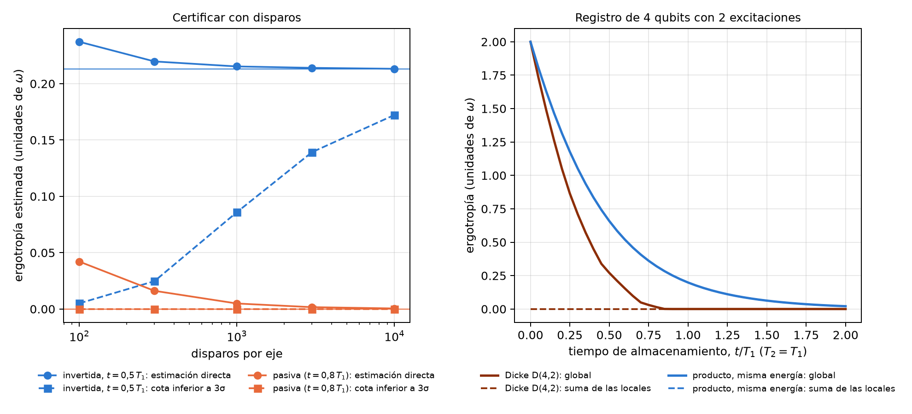
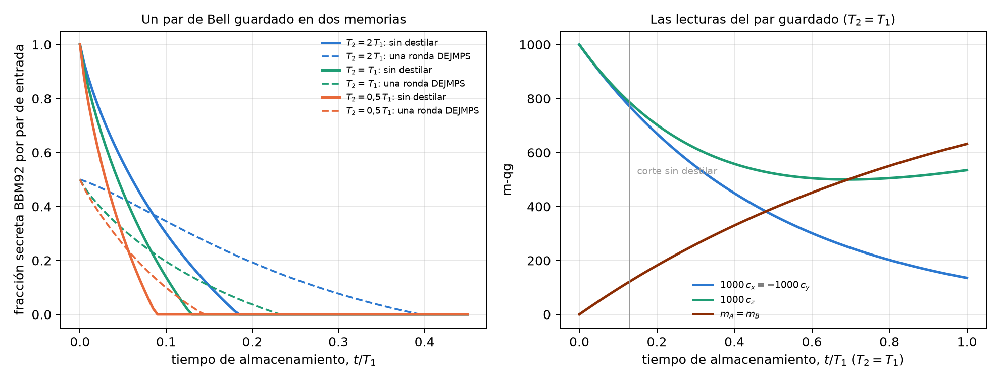

19 Baterías cuánticas y redes
Una batería cuántica es un sistema que guarda energía para entregarla después como trabajo. La más chica es un qubit con \(H=\omega|1\rangle\langle1|\): cargarla es llevarlo hacia \(|1\rangle\), y descargarla es devolverlo a \(|0\rangle\) con una operación unitaria. La pregunta práctica no es cuánta energía tiene el qubit, sino cuánta se puede sacar, que es su ergotropía. Este capítulo la lee en la escala del capítulo 1. Energía, ergotropía y la parte que nadie puede sacar son tres distancias entre lecturas. Con eso se responde cómo cargar una batería que va a esperar con T1 y T2, cuánto cuesta certificar su carga con disparos, y dónde queda la carga de un registro de qubits cuando vive en las correlaciones. La última sección pasa a las redes: un par de Bell guardado en dos memorias es otra cosa que se almacena con T1 y T2, y su tiempo útil se lee igual.
19.1 Desde la base: tres distancias entre lecturas
Un qubit con lecturas \((m_X,m_Y,m_Z)\) y radio \(m_r=\sqrt{m_X^2+m_Y^2+m_Z^2}\) tiene energía \(\omega(1000-m_Z)/2000\): la distancia de su lectura Z al polo norte, que es el estado fundamental. Su ergotropía, el trabajo máximo que extrae una operación unitaria, es (notas, §56)
\[ W=\omega\,\frac{m_r-m_Z}{2000}, \]
y lo que queda sin extraer, la energía del estado pasivo, es \(\omega(1000-m_r)/2000\). La energía se reparte entre lo que el estado está por debajo del techo de su propia esfera, \(m_r-m_Z\), y lo que la esfera perdió de radio, \(1000-m_r\). Una unitaria gira el estado sin cambiarle el radio, así que lo mejor que puede hacer es llevarlo al techo de su esfera, \(m_Z=m_r\). La parte perdida por la mezcla no la saca ninguna unitaria.
Para un estado puro, \(m_r=1000\) y \(W=\omega\sin^2(\theta/2)=\omega\,p_1\): la ergotropía es la ecuación de probabilidad del capítulo 1, con el ángulo qang como ángulo de carga (comprobado a \(2\cdot10^{-16}\)). Las notas separan además \(W=W_{\text{inc}}+W_{\text{coh}}\), con \(W_{\text{inc}}=\omega\max(0,-qg_Z)\) (la inversión de población) y \(W_{\text{coh}}=\tfrac{\omega}{2}(r-|qg_Z|)\) (la coherencia). Las fórmulas coinciden con la expresión general por autovalores a \(3\cdot10^{-16}\) en 200 estados al azar.
| estado | \(m_Z\) | \(m_r\) | energía | extraíble | atrapada por la mezcla |
|---|---|---|---|---|---|
| puro, invertido | −1000 | 1000 | 1,000 | 1,000 | 0 |
| puro, en el ecuador | 0 | 1000 | 0,500 | 0,500 | 0 |
| puro, \(\theta=2\pi/3\) | −500 | 1000 | 0,750 | 0,750 | 0 |
| mezclado, abajo | −500 | 500 | 0,750 | 0,500 | 0,250 |
| mezclado, en el ecuador | 0 | 500 | 0,500 | 0,250 | 0,250 |
| invertido y envejecido, \(t=0{,}8\,T_1\) | +101 | 101 | 0,449 | 0 | 0,449 |
El último renglón es una batería pasiva: tiene casi media unidad de energía y no entrega nada, porque está en el techo de su esfera (\(m_Z=m_r\)). Le pasa a toda batería invertida cuando su lectura Z cruza el ecuador hacia arriba.
19.2 Almacenar con T1 y T2: la inversión muere en el ecuador
Una batería cargada con ángulo \(\theta\) envejece así:
\[ m_Z(t)=1000\big[1-(1-\cos\theta)\,e^{-t/T_1}\big],\qquad m_\perp(t)=1000\sin\theta\,e^{-t/T_2}. \]
La batería invertida (\(\theta=\pi\)) no tiene coherencia y sólo guarda inversión: \(m_Z=1000(1-2e^{-t/T_1})\), que cruza el ecuador en \(t=T_1\ln2\). Ahí su ergotropía es cero y no vuelve. Una batería inclinada guarda menos al principio, pero su coherencia la mantiene por debajo del techo de su esfera después del cruce, mientras \(T_2\) lo permita.
| \(T_2/T_1\) | cruce \(t_c\) | \(t=0{,}5\,T_1\) | \(t=T_1\) | \(t=2\,T_1\) |
|---|---|---|---|---|
| 2 | \(0{,}288\,T_1=\ln(4/3)\) | \(0{,}70\pi\): 0,297 / 0,213 / 0,240 | \(0{,}58\pi\): 0,129 / 0 / 0,122 | 0,038 / 0 / 0,038 |
| 1 | \(0{,}405\,T_1=\ln(3/2)\) | \(0{,}78\pi\): 0,234 / 0,213 / 0,165 | \(0{,}59\pi\): 0,054 / 0 / 0,050 | 0,005 / 0 / 0,005 |
| 0,5 | \(0{,}618\,T_1\) | \(\pi\): 0,213 / 0,213 / 0,073 | \(0{,}60\pi\): 0,008 / 0 / 0,007 | ≈ 0 |
| 0,2 | \(0{,}692\,T_1\) | \(\pi\): 0,213 / 0,213 / 0,004 | ≈ 0 | ≈ 0 |
- La regla de carga. Si la batería se va a usar antes de \(t_c\), conviene cargarla del todo (\(\theta=\pi\)). Si no, conviene inclinarla, hasta unos \(0{,}6\pi\) a \(t=T_1\). El cruce resuelve \(x^{2T_1/T_2-1}=2(2x-1)\) con \(x=e^{-t_c/T_1}\), que sale de un análisis de inclinación chica y coincide con el óptimo numérico a \(10^{-6}\); para \(T_2=2T_1\) y \(T_2=T_1\) da las formas cerradas \(\ln(4/3)\) y \(\ln(3/2)\).
- El cruce tiende al ecuador. Cuando \(T_2\) se achica, \(t_c\) tiende a \(T_1\ln2=0{,}693\,T_1\), el momento en que la lectura Z de la batería invertida cruza el ecuador. Sin coherencia no hay nada que inclinar.
- La coherencia compra tiempo sólo si \(T_2\) se parece a \(T_1\). A \(t=T_1\) una batería inclinada guarda \(0{,}13\,\omega\) (\(T_2=2T_1\)) o \(0{,}05\,\omega\) (\(T_2=T_1\)), donde la invertida no guarda nada. Con \(T_2=0{,}2\,T_1\) no compra nada. En iones atrapados, donde T1 casi no existe, conviene cargar siempre del todo.

19.3 Certificar la carga con disparos
La ergotropía se estima con disparos en los tres ejes, y la fórmula tiene una trampa. El radio estimado sale inflado, porque el ruido de los tres ejes se suma en cuadratura: \(E[\hat r^2]=r^2+3\sigma^2\). Y una batería pasiva está justo en el techo de su esfera, de modo que cualquier inflación del radio la hace parecer cargada.
| disparos por eje | 100 | 300 | 1000 | 3000 | 10 000 |
|---|---|---|---|---|---|
| invertida, \(t=0{,}5\,T_1\) (verdad 0,213): estimación directa | 0,237 (0,60) | 0,220 (0,54) | 0,215 (0,52) | 0,214 (0,52) | 0,213 (0,50) |
| invertida: cota inferior a 3σ | 0,005 | 0,025 | 0,086 | 0,139 | 0,172 |
| pasiva, \(t=0{,}8\,T_1\) (verdad 0): estimación directa | 0,042 (0,99) | 0,016 (1,00) | 0,005 (1,00) | 0,002 (1,00) | 0,001 (1,00) |
| pasiva: cota inferior a 3σ | 0 | 0 | 0 | 0 | 0 |
- La estimación directa sobrestima en más de la mitad de las corridas, y declara carga en una batería pasiva en el 99–100 % de ellas.
- La cota a 3σ nunca es insegura, pero es cara: con 1000 disparos por eje certifica 0,086 de \(0{,}213\,\omega\), y con \(10^4\) todavía sólo el 81 %. Una batería casi descargada no se certifica con ningún número razonable de disparos.
Es el mismo problema que el QRNG del capítulo 18: una cantidad que depende del radio, leída junto a un borde.
19.4 Registros: la carga bloqueada en las correlaciones
En un registro de qubits la carga puede vivir en las correlaciones. Las notas comparan dos baterías de 4 qubits con 2 excitaciones, las dos con energía \(2\omega\), envejecidas con ruido local (\(T_2=T_1\)):
- el estado de Dicke \(D(4,2)\), la superposición pareja de los seis registros con dos unos;
- un producto de cuatro qubits en el ecuador, con la misma energía.
Leídas qubit por qubit, son opuestas. En el Dicke cada qubit lee \((m_X,m_Y,m_Z)=(0,0,0)\): radio local cero, el centro de la esfera, un qubit pasivo. En el producto cada qubit lee \((1000,0,0)\): radio 1000, ergotropía \(\omega/2\). Sin embargo, la lectura Z media del registro es idéntica en las dos, en todo momento (0, 95, 259, 503 y 777 m-qg para \(t=0\), 0,1, 0,3, 0,7 y 1,5 \(T_1\)), y no las distingue.
| \(t/T_1\) | 0 | 0,1 | 0,3 | 0,7 | 1,5 |
|---|---|---|---|---|---|
| Dicke: ergotropía global | 2,000 | 1,489 | 0,710 | 0,049 | 0 |
| Dicke: suma de las locales | 0 | 0 | 0 | 0 | 0 |
| producto: global = suma de las locales | 2,000 | 1,629 | 1,051 | 0,407 | 0,063 |
| \(m_Z\) medio del registro (m-qg) | 0 | 95 | 259 | 503 | 777 |
- La carga del Dicke está bloqueada. Toda es extraíble con una operación global, y ninguna con operaciones de un qubit: la suma de las ergotropías locales es cero. La del producto es toda local.
- El radio local las distingue; la lectura media no. La suma de las ergotropías locales, que sale de las tres lecturas de cada qubit, separa una batería de la otra.
- La carga bloqueada es más frágil con ruido local: 0,71 frente a \(1{,}05\,\omega\) a \(0{,}3\,T_1\), y 0,05 frente a \(0{,}41\,\omega\) a \(0{,}7\,T_1\).
El radio local cero no es nuevo en el libro. Es lo que leen los qubits de un par de Bell en una red (capítulo 12, §57) y los qubits de conteo de Shor con \(N=21\) antes de la QFT (capítulo 16). En los tres casos lo que importa está en las correlaciones, y la lectura de un qubit sólo puede decir que no está en él.

19.5 Redes: un par de Bell guardado en dos memorias
Una red cuántica también guarda algo en memorias con T1 y T2: los pares de Bell que reparte entre sus nodos. El capítulo 12 leyó un par en qg (tres correladores y dos sesgos locales) y eligió con esa lectura cómo destilarlo. Falta la pregunta de esta sección, la misma que la de la batería: cuánto tiempo puede esperar un par en la memoria antes de no servir. Para \(|\Phi^+\rangle\) con las dos mitades guardadas un tiempo \(t\), las lecturas tienen forma cerrada (notas, §57; coinciden con la matriz densidad a \(5\cdot10^{-16}\)):
\[ c_x=-c_y=e^{-2t/T_2},\qquad c_z=1-2g+2g^2,\qquad m_A=m_B=1000\,g,\qquad g=1-e^{-t/T_1}. \]
Los sesgos locales \(m_A\) y \(m_B\) suben desde cero: es el testigo de T1 sobre un par compartido, la misma lectura que corría el centro de la imagen de la esfera en BB84 (capítulo 17). El par sirve para una clave BBM92 mientras \(1-h(Q_X)-h(Q_Z)>0\), con \(Q_X=(1-c_x)/2\) y \(Q_Z=(1-c_z)/2\).
| \(T_2/T_1\) | 2 | 1 | 0,5 | 0,2 |
|---|---|---|---|---|
| corte sin destilar (\(T_1\)) | 0,184 | 0,129 | 0,088 | 0,051 |
| lecturas en el corte: \(1000\,c_x\) / \(1000\,c_z\) / \(m_A\) (m-qg) | 832 / 720 / 168 | 773 / 787 / 121 | 702 / 845 / 85 | 598 / 905 / 50 |
| corte con una ronda DEJMPS (\(T_1\)) | 0,395 | 0,232 | 0,144 | 0,076 |
| destilar conviene después de (\(T_1\)) | 0,085 | 0,083 | 0,056 | 0,032 |
- Un par dura mucho menos que una batería. La batería invertida guarda carga hasta \(0{,}69\,T_1\); el par deja de dar clave a \(0{,}05\)–\(0{,}18\,T_1\), porque la clave exige correladores cerca del umbral de Shor–Preskill del capítulo 16: 780 m-qg cuando el error es igual en las dos bases, y aquí repartido entre ellas (832 y 720 m-qg con \(T_2=2T_1\)). Lo que se guarda es una correlación, y la clave la pide casi intacta.
- Una ronda de destilación casi duplica el tiempo útil cuando lo limita T1 (0,184 → 0,395 con \(T_2=2T_1\)). Cuesta la mitad de los pares, así que con pares frescos baja la clave por par de entrada. Conviene destilar sólo después del cruce de la última fila, y ese cruce se lee de los correladores envejecidos.
- Las dos memorias tienen la misma regla de fondo. En la batería, la coherencia (\(T_2\)) compra tiempo después del cruce de la inversión. En el par, la destilación compra tiempo después de su propio cruce. En los dos casos el cruce sale de las lecturas.

19.6 Lo que queda pendiente
Todo es exacto o simulado: no hay corrida en hardware. Faltan una batería real cargada con distintos ángulos en un dispositivo con \(T_2\approx T_1\), donde la regla de carga se pueda poner a prueba, y la preparación de un Dicke \(D(4,2)\) con la medición de su ergotropía local. En la parte de redes, la destilación se calcula sobre el estado girado (diagonal de Bell) con compuertas locales perfectas, y el corte supone memorias iguales en los dos nodos.
19.7 Sin qang y con qang
| acción | sin qang | con qang | diferencia |
|---|---|---|---|
| calcular la ergotropía | autovalores de \(\rho\) y la energía pasiva | \((m_r-m_Z)/2000\) | equivalente: es la fórmula estándar de un qubit escrita en lecturas |
| saber cuánta energía nadie puede sacar | energía del estado pasivo | \((1000-m_r)/2000\), el radio perdido | a favor, modesto: el reparto se lee de un vistazo |
| ergotropía de un estado puro | \(\omega\sin^2(\theta/2)\) | la ecuación de probabilidad del capítulo 1, \(\omega\,p_1\) | equivalente; muestra que la base del capítulo 1 es la de la carga |
| decidir cómo cargar | optimización numérica del ángulo | cruce cerrado \(x^{2T_1/T_2-1}=2(2x-1)\); la inversión muere al cruzar el ecuador | a favor: una regla cerrada y una imagen (el ecuador); la regla es aporte de las notas, no de la unidad |
| certificar la carga | estimación directa | la pasiva está en el techo de su esfera, y el radio inflado la vuelve “cargada” | a favor como diagnóstico; la cura, la cota a 3σ, es estadística estándar |
| distinguir carga local de bloqueada | ergotropía global y local con tomografía | radio local de cada qubit; la lectura media no sirve | equivalente en la cuenta, a favor en la lectura: es el mismo radio local cero de los capítulos 12 y 16 |
| decidir cuánto guardar un par de Bell | fidelidad y tasa de clave del estado envejecido | correladores y sesgos en forma cerrada; corte y cruce de destilación leídos de ellos | equivalente en la cuenta; los cortes son conocidos, la forma cerrada y el cruce son aporte de las notas |
Balance. Las fórmulas son las estándar de la ergotropía de un qubit, y las baterías con almacenamiento asistido por coherencia o con carga bloqueada ya están en la literatura. Lo que aporta la base del capítulo 1 es la lectura: la energía se reparte entre lo que el estado está por debajo del techo de su esfera y lo que perdió de radio. Con esa lectura se ve por qué la batería invertida muere en el ecuador, por qué la estimación directa ve carga donde no hay, y por qué un registro de Dicke parece descargado qubit por qubit. La regla de carga con su cruce cerrado es aporte de las notas.
19.8 En código
import math
import sys
sys.path.insert(0, "examples")
import battery_ergotropy_qg as BT
m_x, m_y, m_z = 500.0, 0.0, 0.0 # mezclado en el ecuador (m-qg)
m_r = math.sqrt(m_x**2 + m_y**2 + m_z**2)
(1000 - m_z) / 2000, (m_r - m_z) / 2000, (1000 - m_r) / 2000 # energía 0.5, extraíble 0.25, atrapada 0.25
BT.ergotropy(0.5, 0.0, 0.0) # 0.25, la misma cuenta
BT.crossover_time_analytic(1.0), math.log(1.5) # 0.405 y 0.405: el cruce con T2 = T119.9 Resumen
- La energía de un qubit se reparte entre lo extraíble, \((m_r-m_Z)/2000\), y lo atrapado por la mezcla, \((1000-m_r)/2000\); para un estado puro la ergotropía es la ecuación de probabilidad del capítulo 1, \(\omega\,p_1\).
- Una batería invertida muere cuando su lectura Z cruza el ecuador, en \(t=T_1\ln2\). Una batería inclinada guarda carga después de eso si \(T_2\) se parece a \(T_1\), y la regla de carga tiene un cruce cerrado: \(\ln(4/3)\) para \(T_2=2T_1\), \(\ln(3/2)\) para \(T_2=T_1\).
- La estimación directa de la ergotropía sobrestima, y declara carga en una batería pasiva en casi todas las corridas; la cota a 3σ es segura pero cara.
- En un registro de Dicke toda la carga está en las correlaciones: cada qubit lee el centro de la esfera, la suma de las ergotropías locales es cero, y la lectura media no lo distingue de un producto con la misma energía.
- Un par de Bell guardado da clave sólo hasta \(0{,}05\)–\(0{,}18\,T_1\), mucho menos que una batería; una ronda de destilación casi duplica ese tiempo, y conviene sólo después de un cruce que se lee de los correladores.